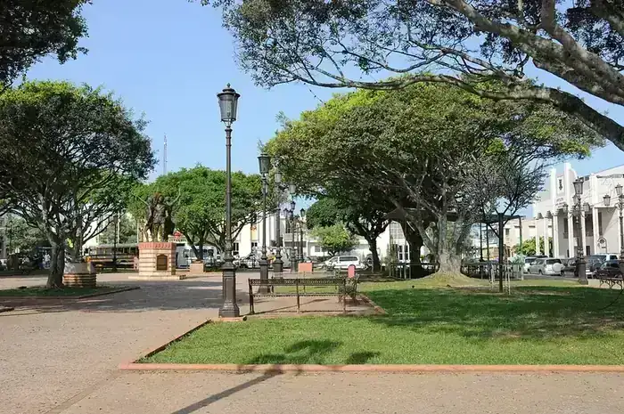
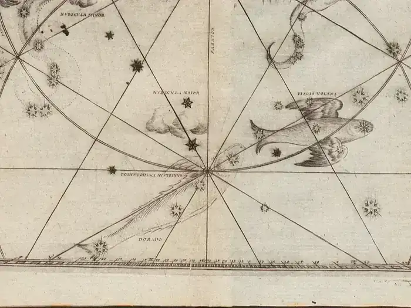
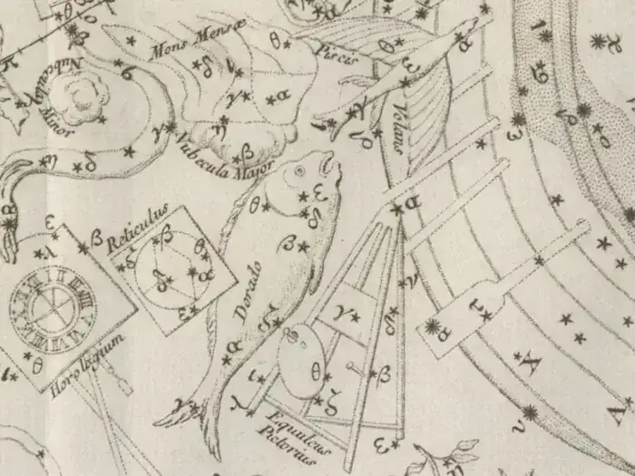

The origin
El Dorado — 'the gilded one' — began as an account of a Muisca ceremony at Lake Guatavita in the highlands of what is now Colombia: a chief, covered in gold dust, was rowed out and offered gold and emeralds to the lake. Spanish accounts from the 1530s describe the ritual.
Maps, diagrams and images






The transformation
The story became a city, then an empire, then a destination. Expeditions from the 1530s onwards searched the Orinoco and Amazon basins; Gonzalo Pizarro's and Orellana's expedition lost hundreds of men, and Walter Raleigh made two voyages. Thousands died, and no city was found.
The lake itself has been drained and dredged repeatedly; the gold that was recovered is a fraction of what the legend promised, and the ceremony is documented.
Documented: the Muisca ritual and its description.
Documented: the expeditions and their cost.
Not found: any city of gold.
Explained: the transformation of a rite into a place.
The label: debunked.
Why it is in the archive
Because it is the clearest case of a real ritual becoming a fictional city, and because the cost of the search is documented.
Open resources on this topic
- BookAir Pollution Regulations in State Implementation Plans: California, El Dorado County — ['Abcor, Inc., Wilmington, MA. Walden Div.', 'Environmental · 1978 (Internet Archive, free to read)
- BookReckoning at El Dorado — Connor, Scott · 2017 (Internet Archive, free to read)
- BookUnited States v. 411 Broadview Street, El Dorado, Kansas (Internet Archive, free to read)
- PapersOpen-access articles: DOAJ · PubMed Central · Internet Archive Scholar
- BooksPublic-domain and borrowable copies: Open Library · Project Gutenberg · Google Books
Cite this page
Momin, S. (2026). El Dorado. The Larger World Archive. https://drsamonline.github.io/LARGE_GLOBE/el-dorado.htmlMomin, Sohil. “El Dorado.” The Larger World Archive, 2026, https://drsamonline.github.io/LARGE_GLOBE/el-dorado.html.Momin, Sohil. “El Dorado.” The Larger World Archive, 2026. https://drsamonline.github.io/LARGE_GLOBE/el-dorado.html.@misc{el2026el,
author = {Momin, Sohil},
title = {El Dorado},
year = {2026},
howpublished = {The Larger World Archive},
url = {https://drsamonline.github.io/LARGE_GLOBE/el-dorado.html},
note = {Last reviewed 20 November 2026}
}Last reviewed 20 November 2026 · Corrections policy · this page is not peer reviewed
Sources for this page
- Wikipedia, “El Dorado” — the legend and its originen.wikipedia.org
- Wikipedia, “Lake Guatavita” — the siteen.wikipedia.org
- Wikipedia, “Muisca” — the peopleen.wikipedia.org
- Wikipedia, “Walter Raleigh” — one of the searchersen.wikipedia.org